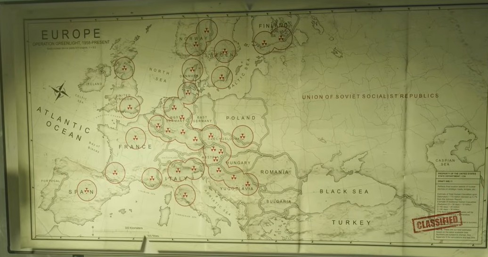
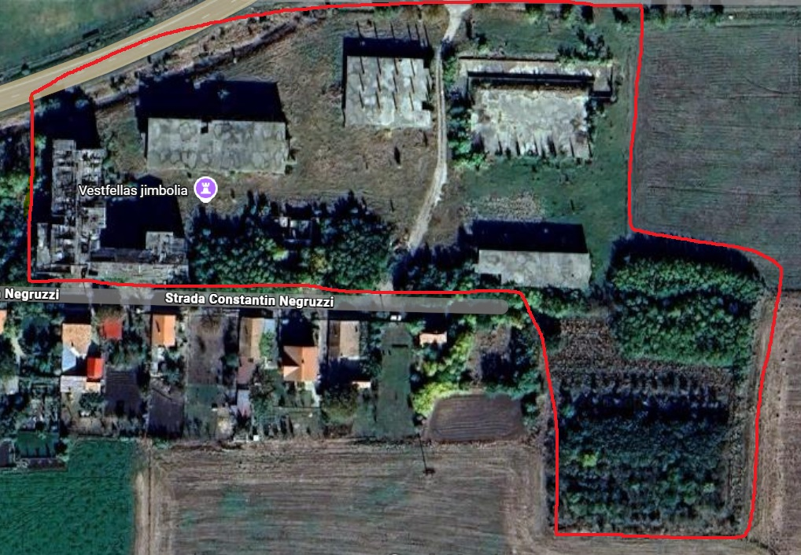

TOP SECRET — CIA EYES ONLY — DESTROY AFTER READING
// SITUATION REPORT
Year 1984. Soviet operative PERSEUS found of an American plan to place 43 nuclear warheads across Europe under PROJECT GREEN LIGHT
in case the USSR attacked a Western country. A doomsday protocol engineered to detonate simultaneously and destroy the entire continent.
CIA handler RUSSELL ADLER and his Black Ops team have obtained intelligence pointing to a double agent known as
BELL — a former CIA operative now working for Perseus and EX-KGB, who holds the key to disarm the detonation command infrastructure.
Without Bell, the primary control terminal remains unknown.
Your mission: Capture Bell, intercept the nuclear device, and reach the main command panel before Perseus executes the final launch order.
Failure means the end of Europe.
// YOUR TEAM: CIA BLACK OPS — CODENAME: CLEAN HOUSE
1
CAPTURE BELL
Locate and extract the double agent known as BELL. Bell holds critical knowledge of the Green Light terminal infrastructure and abort codes.
▸ PHASE 1 — PRIMARY OBJECTIVE
2
INTERCEPT NUCLEAR DEVICE
Capture the nuclear bomb currently in Perseus and USSR hands before it can be deployed to Cuba. Eliminate all Soviet Spetsnaz guards protecting the asset.
▸ PHASE 2 — SECONDARY OBJECTIVE
3
REACH THE COMMAND PANEL & ABORT
Adler and Bell advance to the primary Green Light command terminal and execute the abort sequence — disabling all 43 warheads before the detonation timer expires.
Hold the panel until abort is confirmed.
▸ PHASE 3 — FINAL OBJECTIVE
// OPERATIONAL MAPS

EUROPE SECTOR — NUCLEAR WARHEAD LOCATIONS // OPERATION GREEN LIGHT 1958–PRESENT

OPERATIONAL SITE -JIMBOLIA // GRID REF: SECTOR-7
// AUTHENTICATION CODES — EYES ONLY
ARM CODE (enemy uses)
Nuclear_lunch_init_start
DISARM CODE (your code)
Nuclear_lunch_exec_stop
СОВЕРШЕННО СЕКРЕТНО — ТОЛЬКО ДЛЯ ПЕРСЕЯ — УНИЧТОЖИТЬ ПОСЛЕ ПРОЧТЕНИЯ
// ОЦЕНКА СИТУАЦИИ — SITUATION REPORT
Year 1984. Soviet operative PERSEUS found of an American plan to place 43 nuclear warheads across Europe under PROJECT GREEN LIGHT
in case the USSR attacked a Western country. A doomsday protocol engineered to detonate simultaneously and destroy the entire continent.
CIA operative RUSSELL ADLER has become aware of the operation. He is hunting agent BELL — our asset who knows the location of the command terminal. If Adler reaches BELL or the command panel, the entire operation is compromised.
Your mission: Protect Bell, deny Adler the nuclear device, and defend the command panel until the detonation timer reaches zero.
// YOUR TEAM: SOVIET SPETSNAZ — CODENAME: VYMPEL
1
PROTECT BELL
Spetsnaz must prevent BELL from falling into Adler's hands at all costs. Bell is the only asset who knows the abort codes and terminal location — if Adler captures Bell, the operation is over. Eliminate the CIA team on sight.
▸ ФАЗА 1 — PHASE 1 — CRITICAL PRIORITY
2
DENY NUCLEAR DEVICE TO ADLER
Stop Adler from capturing the nuclear warhead. Soviet forces must hold the perimeter around the device and ensure it remains under USSR control.
▸ ФАЗА 2 — PHASE 2 — CRITICAL PRIORITY
3
DEFEND PANEL & EXECUTE DETONATION
Hold the main command panel against Adler's assault at all costs. Do not allow anyone to reach the terminal. When the countdown timer reaches zero, Project Green Light executes — all 43 warheads detonate across Europe simultaneously. Victory is ours.
▸ ФАЗА 3 — PHASE 3 — FINAL OBJECTIVE
// КАРТЫ ОПЕРАЦИИ — OPERATIONAL MAPS
EUROPE SECTOR — GREEN LIGHT TARGET LOCATIONS // ЗОНЫ ПОРАЖЕНИЯ
МЕСТО ОПЕРАЦИИ — JIMBOLIA SECTOR // КОМАНДНЫЙ ПУНКТ
// КОДЫ АУТЕНТИФИКАЦИИ — AUTHENTICATION CODES
ARM CODE (your code)
Nuclear_lunch_init_start
DISARM CODE (enemy uses)
Nuclear_lunch_exec_stop